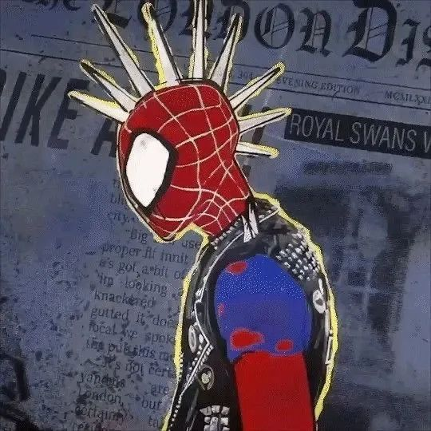
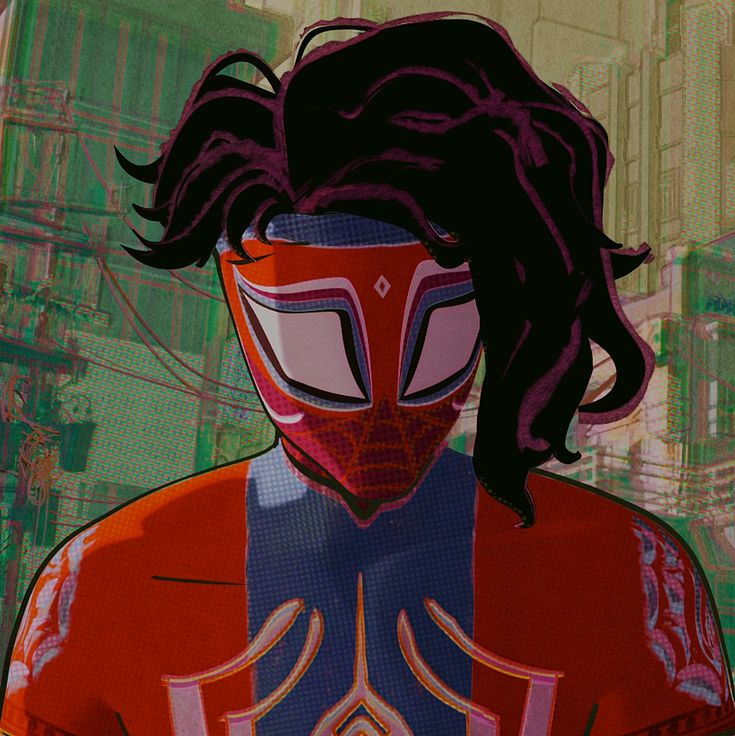
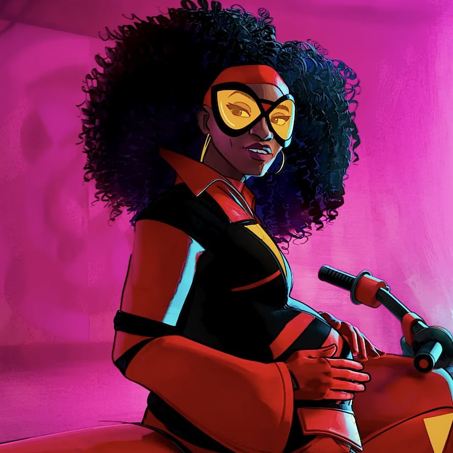

Novos Personagens

Spider-Punk
Daniel Kaluuya
Hobart "Hobie" Brown, um Homem-Aranha anarquista de uma realidade alternativa com uma estética punk rock e atitude rebelde.

Pavitr Prabhakar
Karan Soni
O Homem-Aranha de Mumbattan (uma fusão de Mumbai e Manhattan), com design inspirado na cultura indiana e poderes místicos.

Jessica Drew
Issa Rae
Uma versão grávida da Mulher-Aranha que atua como mentora de Gwen Stacy e membro da Sociedade do Aranhaverso.

Miguel O'Hara
Oscar Isaac
O Homem-Aranha 2099, líder da Sociedade do Aranhaverso que impõe regras rígidas sobre o multiverso para evitar catástrofes.